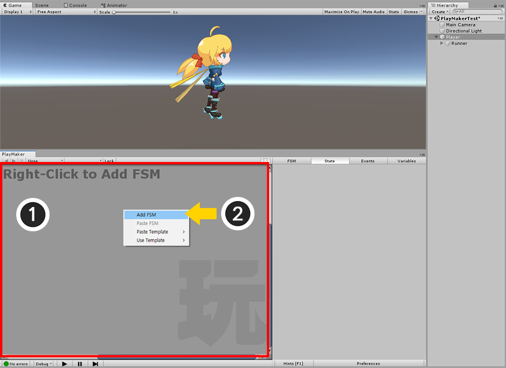
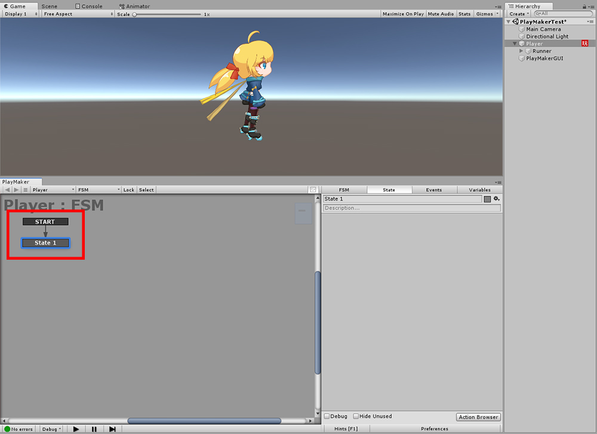
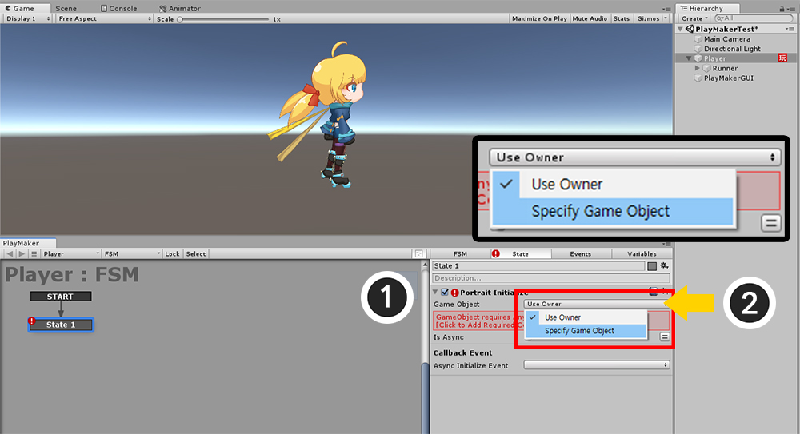
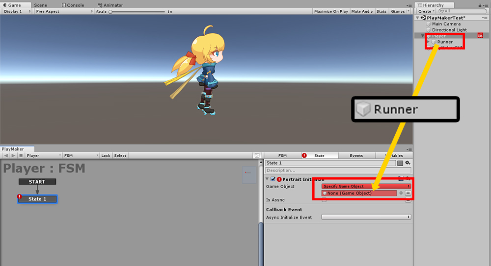
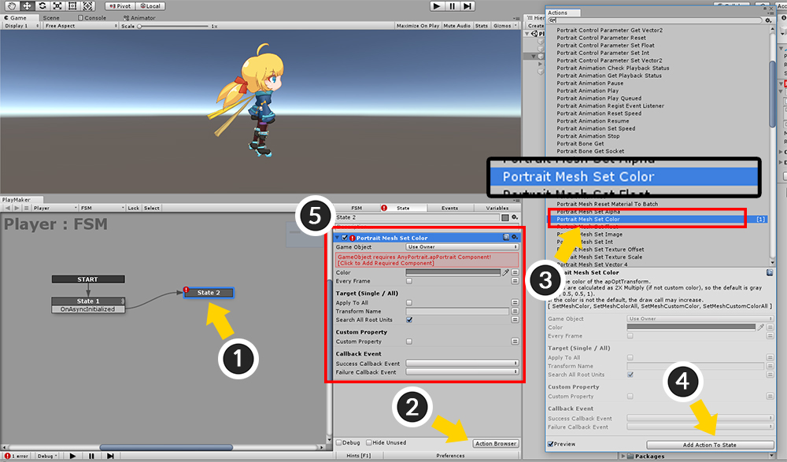

AnyPortrait > 메뉴얼 > PlayMaker™와 연동하기
PlayMaker™와 연동하기
1.1.6
PlayMaker™는 Hutong Games™에서 제작한 FSM (Finite-State Machine) 기반의 유니티 에디터 에셋입니다.
스크립트를 작성하지 않고도 PlayMaker™를 이용하여 게임을 빠르게 제작할 수 있습니다.
PlayMaker™를 이용하여 게임을 제작하는 분들을 위해서, AnyPortrait의 스크립트 기능들을 "커스텀 액션"으로 작성하여 배포합니다.
이 페이지에서는 PlayMaker™ 사용법에 대해서는 다루지 않으며, AnyPortrait와 PlayMaker™를 연동하기 위한 커스텀 액션을 적용하는 방법에 대해서 간단히 설명합니다.
- Hutong Games™ 홈페이지
- PlayMaker™ 에셋 스토어 페이지
먼저, 다음의 링크에서 AnyPortrait-PlayMaker 커스텀 액션 패키지를 다운로드하고 유니티 프로젝트에 Import합니다.
최신 버전 (v1.1.6 기준)
- AnyPortrait-PlayMaker 커스텀 액션 패키지 다운로드 (2019년 5월 18일 빌드)
이전 버전
- AnyPortrait-PlayMaker 커스텀 액션 패키지 다운로드 (2019년 1월 9일 빌드)
주의 사항
- 이 패키지는 Hutong Games™ 에서 제작한 공식 패키지가 아니며, RainyRizzle 팀에서 제작한 패키지 입니다.
- AnyPortrait v1.1.5와 PlayMaker™ v1.9.0에 최적화되도록 개발되었습니다.
- AnyPortrait와 PlayMaker™가 먼저 설치된 프로젝트여야 합니다.

(1) AnyPortrait, (2) PlayMaker™, (3) AnyPortrait-PlayMaker 커스텀 액션 패키지를 모두 설치합니다.
PlayMaker™의 FSM을 추가할 GameObject를 선택한 후, PlayMaker Editor를 실행합니다.

(1) PlayMaker Editor의 빈 공간에서 마우스 오른쪽 버튼을 클릭합니다.
(2) Add FSM 항목을 클릭합니다.

FSM이 생성되고 동시에 "State 1"도 기본적으로 추가되었습니다.

여기서는 예시로 AnyPortrait의 함수 중 Initialize() 함수를 커스텀 액션으로 호출해보겠습니다.
이 함수는 업데이트되는 첫번째 프레임에서 자동으로 실행되기 때문에, 사용자가 특수한 경우를 제외하고는 굳이 구현하지 않아도 됩니다.
하지만, PlayMaker™에서 커스텀 액션을 테스트하기 위해서 여기서는 이 함수를 직접 호출해봅시다.
(1) State 1을 클릭합니다.
(2) State 탭을 선택합니다.
(3) Action Browser 버튼을 눌러서 액션(Action) 리스트를 엽니다.
(4) PlayMaker의 다양한 액션들 중에서 "AnyPortrait" 카테고리를 펼쳐서 "Portrait Initialize" 액션을 선택합니다.
(5) Add Action To State 버튼을 누릅니다.

FSM이 생성된 GameObject가 apPortrait를 포함하고 있지 않다면 에러가 발생할 수 있습니다.
(1) Game Object 항목의 "Use Owner"의 드롭다운 메뉴를 누르고, (2) Specify Game Object를 선택합니다.

apPortrait가 포함된 GameObject를 드래그하여 "None (Game Object)" 슬롯으로 이동하여 지정합니다.

이제 에러가 사라지고, PlayMaker™의 제어를 받을 apPortrait가 연결되었습니다.

PlayMaker™의 이벤트 기능을 테스트하기 위해서 비동기 초기화 설정을 켜봅시다.
(1) Is Async 옵션을 체크하여 비동기 기능을 켭니다.
(2) Async Initialize Event 항목을 클릭한 후 New Event 메뉴를 누릅니다.

새로운 이벤트의 이름을 설정합니다.
여기서는 OnAsyncInitialized로 설정했습니다.
이름을 정하고 Create Event 버튼을 누릅니다.

이벤트가 생성되었지만 아직 State 1에 이벤트의 동작이 정의되지 않았으므로 에러 아이콘이 나타났습니다.
(1) State 1을 마우스 오른쪽 버튼으로 클릭합니다.
(2) Add Transition의 새로 추가된 이벤트(이 예제에서는 OnAsyncInitialized)를 선택합니다.

(3) 에디터의 빈공간에서 마우스 오른쪽 버튼을 클릭한 후, Add State를 눌러서 새로운 State를 만듭니다.

이벤트를 클릭한 상태에서 새로 추가된 State로 드래그를 하면 화살표가 나오면서 연결이 됩니다.
이제 비동기 초기화가 완료되면, OnAsyncInitialized 이벤트가 발생하면서 State 1에서 State 2로 이동을 하게 될 것입니다.

State 2에서 AnyPortrait의 다양한 기능 중 하나인 "메시 색상 바꾸기"를 적용해봅시다.
(1) State 2를 선택합니다.
(2) Action Browser 버튼을 누릅니다.
(3) AnyPortrait 카테고리에서 Portrait Mesh Set Color 액션을 선택합니다.
(4) Add Action To State 버튼을 누릅니다.
(5) Portrait Mesh Set Color 액션이 State 2에 추가되었습니다.

추가된 Portrait Mesh Set Color 액션의 설정을 다음과 같이 변경해봤습니다.
- Game Object는 apPortrait가 포함된 객체(Runner)가 되도록 변경했습니다.
- Color는 붉은색으로 변경했습니다.
- Apply To All을 해제하고, Transform Name은 머리카락 메시의 이름인 "Hair"로 설정했습니다.
- 그외의 설정은 변경하지 않았습니다.

게임을 실행하면, 비동기 초기화가 실행된 후, 머리카락이 붉은색으로 변경되는 것을 볼 수 있습니다.
AnyPortrait-PlayMaker 커스텀 액션에 관하여
1. 스크립트 함수와 커스텀 액션 패키지와의 관계
이 커스텀 액션 패키지는 AnyPortrait의 스크립트 함수들 거의 대부분 포함합니다.
Action Browser에서 커스텀 액션를 선택하면 나오는 설명에 각각 어떤 함수가 구현되었는지 적혀있습니다.
AnyPortrait의 스크립트 함수에 대해서는 관련 페이지를 참고하세요.
2. 메카님(Mecanim)을 이용하는 경우
메카님 시스템으로 애니메이션을 이용하는 경우, AnyPortrait의 애니메이션 커스텀 액션은 작동되지 않습니다.
(스크립트 함수들도 마찬가지로 메카님 사용시 동작하지 않습니다.)
Animator 항목의 액션들을 이용하시길 바랍니다.
3. 커스텀 액션을 사용하면서 발생할 수 있는 이슈
PlayMaker™나 AnyPortrait가 업데이트되면 문제가 발생하거나 신기능을 포함하지 못하는 경우가 있을 수 있습니다.
사용자 분들이 게임을 제작하면서 커스텀 액션의 기능이 추가적으로 더 필요한 경우가 있을 수 있습니다.
이 커스텀 액션 패키지는 RainyRizzle에서 제작하여 배포하는 것이므로, RainyRizzle 홈페이지에 문의를 주시길 바랍니다.
- 문의 페이지로 가기
4. 저작권에 관하여
AnyPortrait의 저작권은 RainyRizzle에 있습니다.
PlayMaker™의 저작권은 Hutong Games™에 있습니다.
AnyPortrait-PlayMaker 커스텀 액션 패키지의 저작권은 RainyRizzle에 있으며, 수정 및 재배포가 가능합니다.
단, Hutong Games™의 요청에 따라 배포가 중단되거나 제한될 수 있습니다.